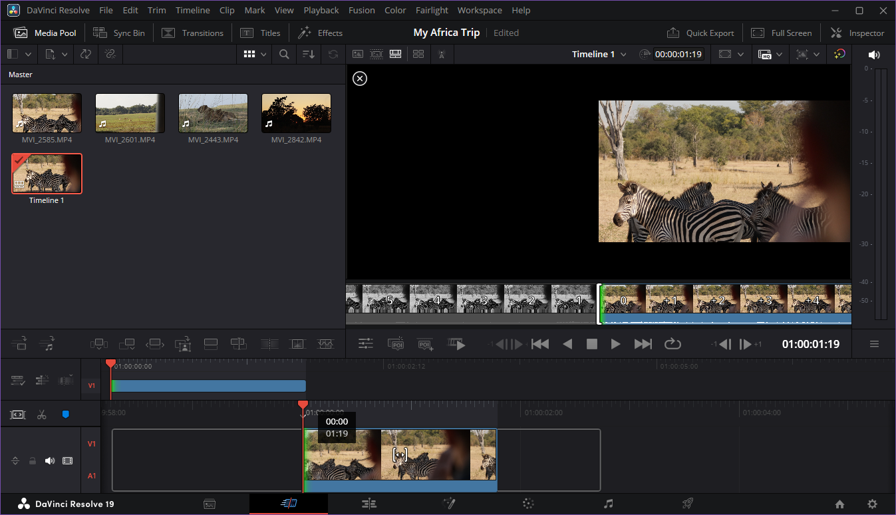

Use the Cut Page
Overview
Use the Cut Page to quickly build a timeline by adding and arrange clips. The Cut Page supports a fast drag-and-drop workflow. Use the Edit Page for precise adjustments (See: Use the Edit Page)
Procedure: Place media in the timeline
- Select a clip from the media pool.
- Drag the clip to the timeline and release to place it at the desired location.
Procedure: Trim clips
- Select Ripple Edit in the timeline window.
- Select and hold the start or end point of a clip in the timeline.
- Drag left or right to change the in or out point of the clip. The surrounding clips will adjust automatically.

Procedure: Split clips
- Adjust the playhead position to the point that you want to split the clip
- Select the Split Clip in the left of the timeline
Procedure: Reorder clips
- Select and hold the clip you want to move in the timeline.
- Drag the clip to the left or right to reorder it in the timeline.
- Release the clip. The timeline will automatically shift clips left and right.
Tips
Use the Cut Page to make a rough cut, then move to the Edit Page for more precision work.
Use Insert video only or Insert audio only to quickly add only one media type to the timeline
Timeline: a sequence of clips arranged in the editor.
Media: video, audio, or image files used in a project.
Clip: a piece of a video or audio file used in a timeline.
In / out point: the start or end positions of a clip.